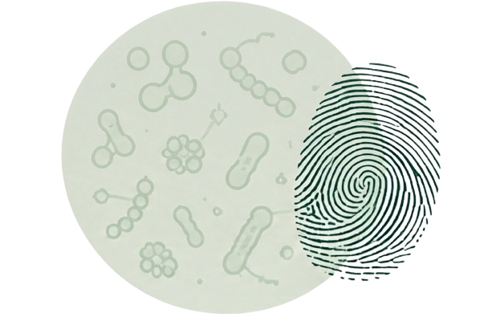

We use the power of skin microbiome data and machine learning to support the future of forensic identification.
Our mission is to build a global database that brings us one step closer to accurate, ethical, and science-based forensics.

To develop reliable microbiome-based identification tools that are inclusive, non-invasive, and applicable across diverse populations.
We combine cutting-edge research with real-world forensic applications.
Our database aims to represent diverse populations for fair and accurate results.
We are committed to privacy, ethics, and responsible use of microbiome data.